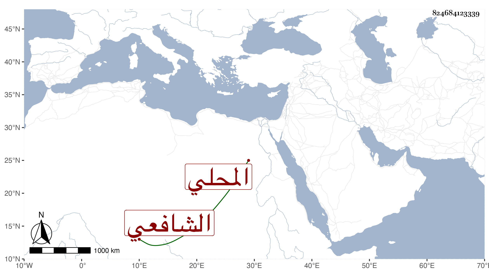

0902Sakhawi.DawLamic.ITO20230111-ara1.EIS1600.824684123339
Biography ID: 824684123339
298
محمد بن محمد بن عبد اللطيف البدر أبو السعادات المحلي الشافعي سبط العسقلاني ويعرف بابن دبوس وهو قريب محمد بن علي بن أبي بكر بن موسى الماضي . اشتغل بالفقه والنحو يسيرا ، وناب في قضاء بلده قانعا منه بالاسم وقرأ في البخاري علي وعلي الديمي وآخرين، وكتب بخطه وصار له به وبشيء من متعلقاته بعض إلمام وتطفل في كل عام بقراءته عند جماعة كالزين بن مزهر وكان يلبسه في الختم جندة بل كان يقرأ على العامة في الأزهر ، وقد حج في سنة سبع وثمانين ورجع فلم يلبث أن مات ببلده في جمادى الأولى من التي بعدها وقد قارب الخمسين فيما أحسب رحمه الله .
